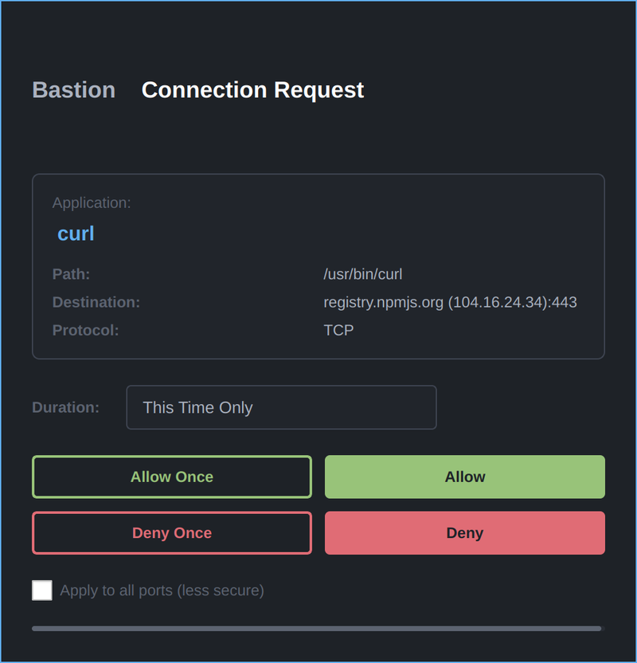
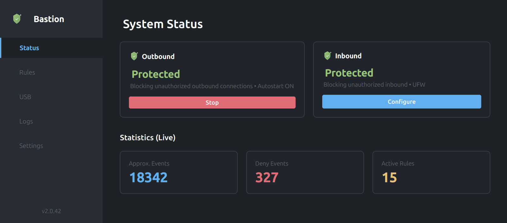
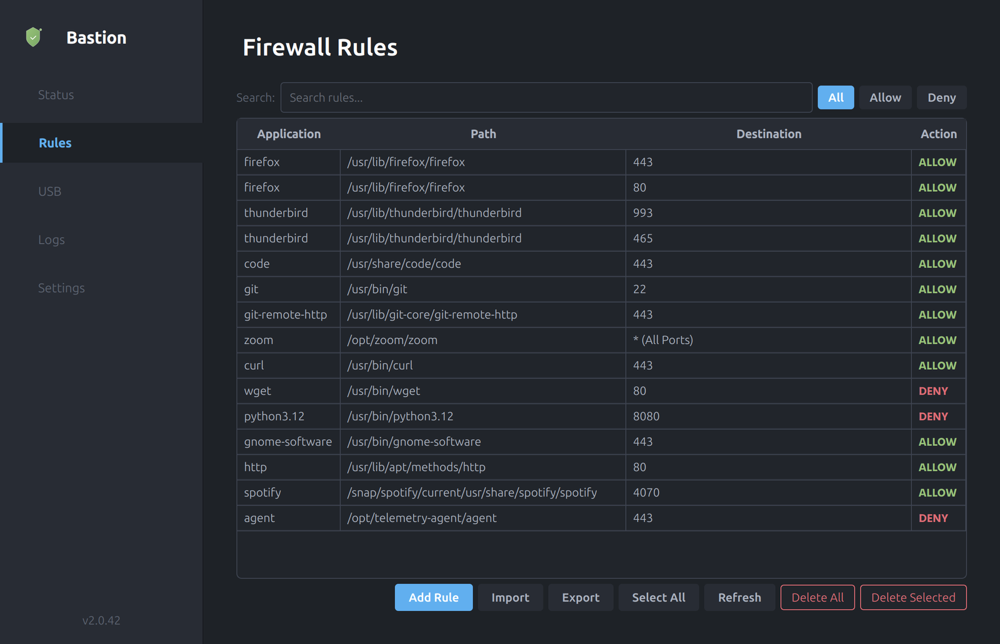
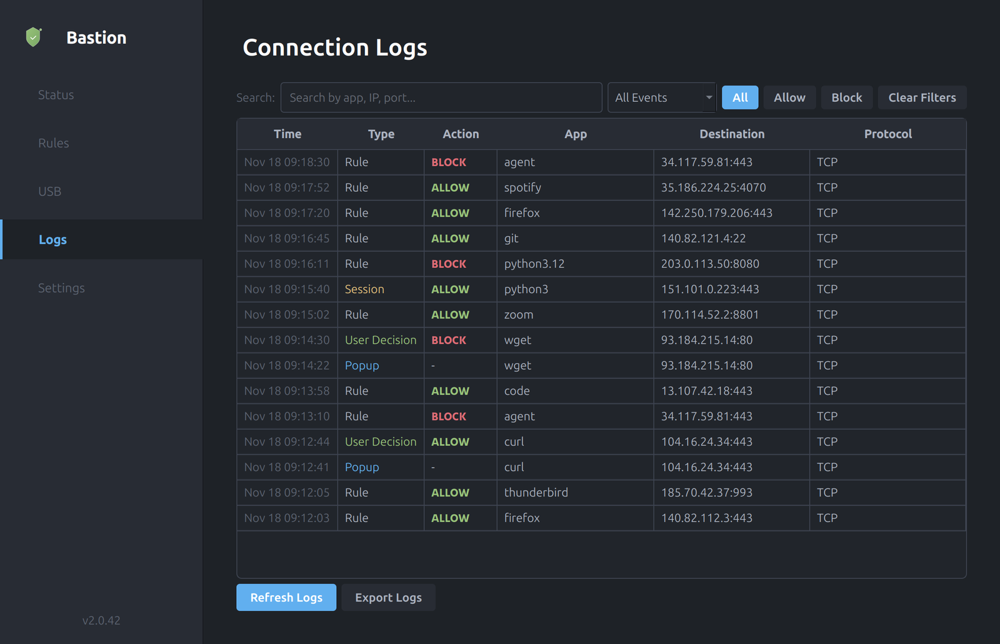
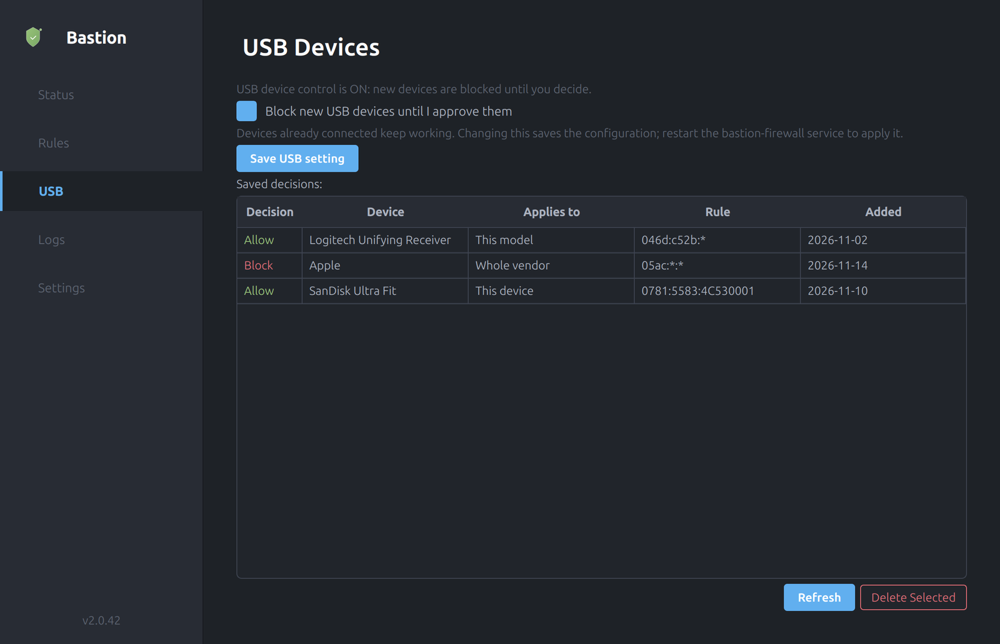
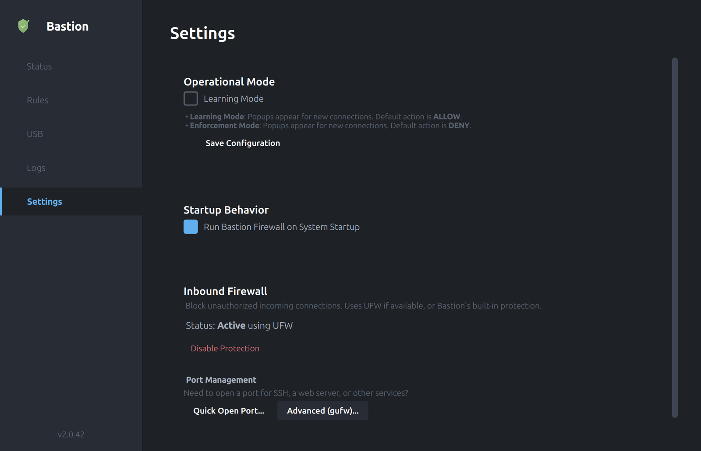

Per-application rules
Rules are bound to the program's executable path and port, so a decision for one app never applies to another.
Bastion asks you, per program, before it may connect to the internet. Allow or block once, for this session, or always. A Rust daemon with kernel-level eBPF identifies the program behind each connection. Free and open source.
Linux allows every outbound connection by default. Any program can talk to any server without you knowing. Tools like UFW mostly protect incoming traffic.
Bastion intercepts each new outbound connection, shows which program makes it and where it goes, and lets you allow or block it. Your rules are kept per program.
When a program without a rule wants to go online, Bastion shows who it is, its path and where it wants to connect. Allow or deny it once, for this session, or always, and optionally for all ports of that program.

Rules are bound to the program's executable path and port, so a decision for one app never applies to another.
Choose how long a decision lasts: this connection only, until the firewall restarts, or permanently. Optionally for all ports of an app.
Kernel hooks record which process opens a connection; the daemon confirms the exact socket
owner via /proc, so even short-lived connections are attributed correctly.
Memory-safe packet handling via netfilter NFQUEUE. Only new connections are inspected; established traffic is not slowed down.
Everything keeps working while Bastion asks what to remember. Switch to enforcement mode when your rules are in place.
In enforcement mode, a connection you don't answer within 60 seconds is blocked, so nothing gets through by accident.
Full IPv6 support. Popups show the destination hostname from local DNS traffic instead of just an IP address.
Blocks unsolicited incoming connections via UFW integration or standalone rules.
Optional: new USB devices stay blocked until you approve them, per device, model or vendor. Read more.
Search, toggle, import and export rules; filter logs and create an allow rule from a blocked entry; change settings.
Local discovery (mDNS, .local) and LAN broadcasts are allowed automatically, so
printers and casting just work.
The tray icon tells you when a new version is out and installs it in one click. You can also check by hand.
A program opens a connection
The first packet is queued
The daemon identifies the program
A saved rule decides, or you get a popup
Allowed or blocked
# Download the .deb from the latest release, then:
sudo apt install ./bastion-firewall_*_amd64.deb# Download the .rpm from the latest release, then:
sudo dnf install ./bastion-firewall-*.x86_64.rpmgit clone https://github.com/shipdocs/bastion-firewall.git
cd bastion-firewall
./build_deb.sh
sudo apt install ./bastion-firewall_*_amd64.debBuilding needs a Rust toolchain. See the README for details.
/sys/kernel/btf/vmlinux)After installing, the firewall starts in learning mode and the Bastion icon appears in your tray.
A popup shows the program, its path and the destination. Choose Allow or Block and how long the decision lasts.
Open the Control Panel from the tray to view, change or delete rules and to read the logs.
When your rules are in place, switch to enforcement mode in the settings. Unknown connections now wait for your answer.

Outbound and inbound protection at a glance, with live statistics.

Per-program allow and deny rules, searchable and filterable.

Recent connections with filters; turn a blocked entry into a rule.

Approve new USB devices per device, model or vendor.

Learning or enforcement mode, startup and inbound protection.
Linux allows every program to connect to the internet by default. Bastion intercepts each new outbound connection, finds out which program makes it, and asks you whether to allow or block it. Your answer can apply once, for the session, or always.
It works in a similar way: an outbound application firewall that asks per program before a connection is allowed. Bastion is free and open source (GPL-3.0) and uses a Rust daemon with eBPF to identify programs.
A .deb package is provided for Ubuntu 22.04+, Debian 12+ and derivatives such as Linux Mint, Pop!_OS and Zorin OS, and an .rpm package for Fedora-based systems. It needs an x86_64 machine with Linux kernel 6.0+ and BTF support.
In learning mode every connection is let through and Bastion only asks you what to remember, so nothing breaks while you build your rules. In enforcement mode a connection waits for your answer and is blocked if you deny it or do not answer within 60 seconds.
Process identification and DNS hostname matching happen locally. For a destination IP without a hostname, the popup looks up the organisation of that IP address at ip-api.com. Update checks read the version number from GitHub.
Yes. Bastion Firewall is free and open-source software under the GNU General Public License v3.0.
Install Bastion Firewall and decide which programs may go online.